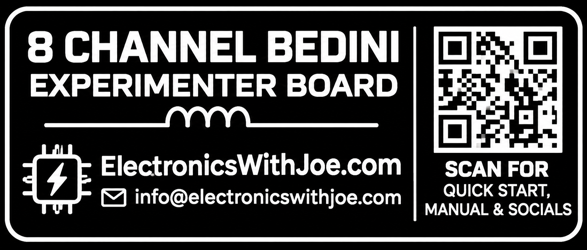

Documentation & design files
Planned: schematic, Gerber files, component list and build notes for anyone who wants to study or build the design.
A purpose-built platform for hands-on experiments with pulse-driven coils, switching circuits and magnetic systems. More time testing and comparing ideas. Less time rebuilding the same circuit from scratch.

Bedini-inspired switching experiments are often built as one-off circuits. They're interesting to explore, but difficult to document, modify and compare when every setup is wired differently.
This project brings an eight-channel experimenter board into the Electronics with Joe lab: a repeatable foundation for testing winding arrangements, switching behaviour and electrical measurements.
DESIGNED IN ONTARIO, CANADA
The point isn't to sell extraordinary energy claims. It's to give experimenters a practical way to build, test and learn. Change one variable, record the measurements, and compare the results. Document what works, what doesn't, and why.
A dedicated board gives your experiments a more organized starting point.
Explore multi-channel pulse-switching configurations with a consistent circuit layout.
Characterize input, switching waveforms and output behaviour using appropriate instruments.
The PCB layout is finished. The next step is fabrication, assembly and bench validation. Ordering will open after those checks, with final pricing and availability posted here.
Planned: schematic, Gerber files, component list and build notes for anyone who wants to study or build the design.
For builders who want to source their own components and assemble the project themselves.
A convenient build-it-yourself option, subject to component sourcing and final kit validation.
Planned fully populated board option, pending successful testing and final availability.
These are proposed launch options, not products currently available to order. Final pricing, what's included and any purchase terms will be confirmed at launch. Use appropriate electrical safety precautions when working with inductive switching circuits.